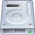

Elementos básicos
El escritorio
Aquí, ademá de los documentos, aplicaciones o carpetas que almacenes, encontrarás enlaces a dispositivos como cámaras, pen drives, reproductores MP3, etc.
Haz clic en la imagen para ampliar

Sección de relleno
La Oficina de Software Libre de la ULL es el ente de la Universidad creado para promover el uso de Software Libre y estándares abiertos. Además de Bardinux, se han creado múltiples proyectos, como el correo del alumnado, el disco duro virtual, y otros destinados a la formación, como el CILA, cursos para el profesorado y el PAS.
Elementos básicos
 El escritorio de Bardinux
El escritorio de Bardinux
Donde puedes encontrar las aplicaciones, tus archivos, etc. Un recorrido por los distintos elementos del escritorio.
 CD's, DVD's, Pen drives y cámaras
CD's, DVD's, Pen drives y cámaras
Como acceder a los contenidos de tu Pen Drive, CDROM, DVD, reproductor MP3, Cámara, etc.
 Barra de aplicaciones
Barra de aplicaciones
Aplicaciones activas, elementos adicionales...
 Carpeta de usuario
Carpeta de usuario
Donde se almacenan tus documentos
Disco duro virtual
Almacena tus ficheros y accede a ellos desde cualquier ubicación.
 Correo del alumnado
Correo del alumnado
Tu cuenta de correo de la ULL. También encontrarás información de interés.